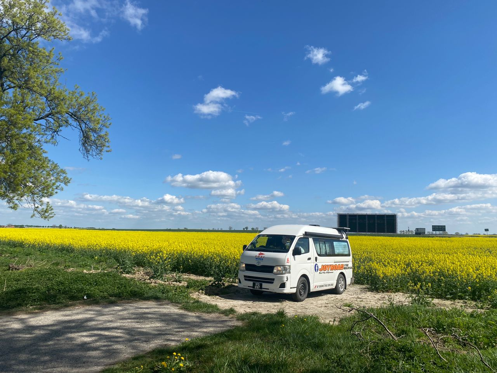
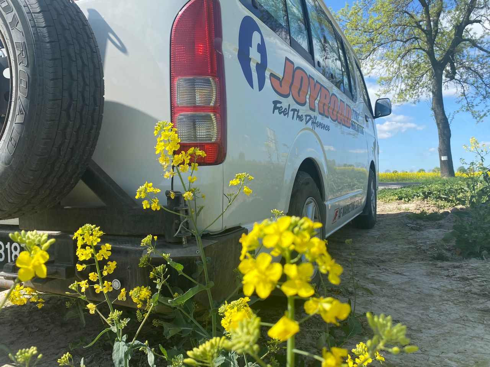
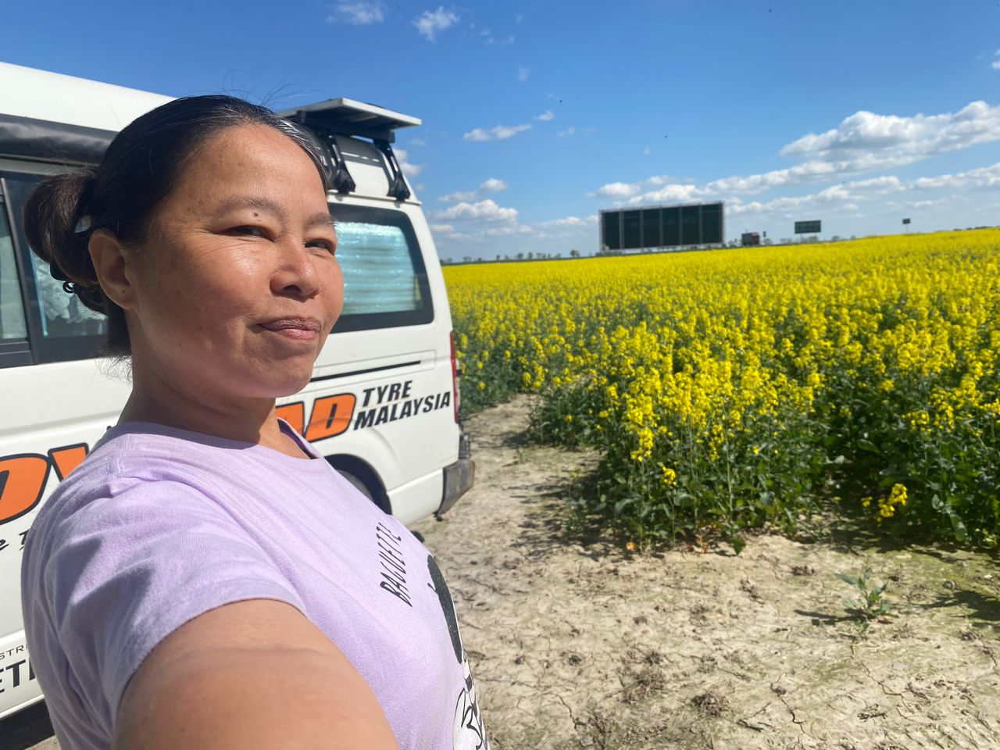
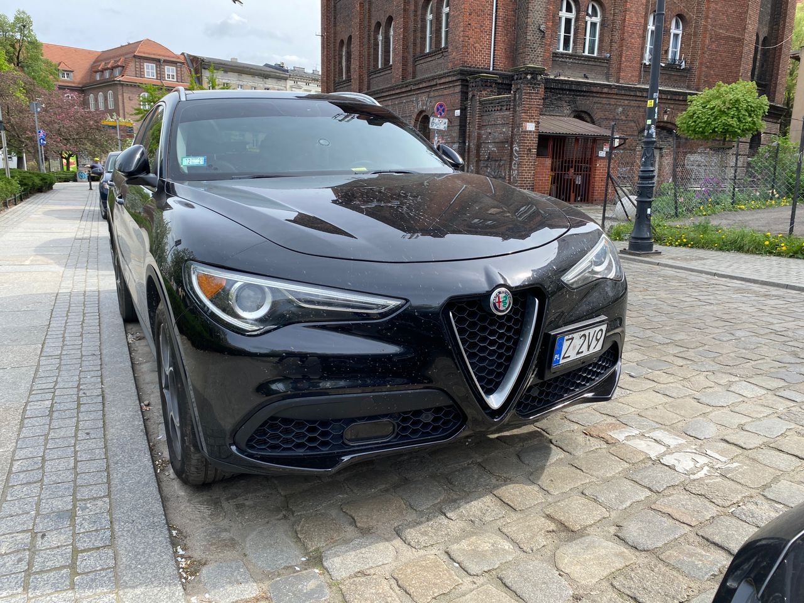
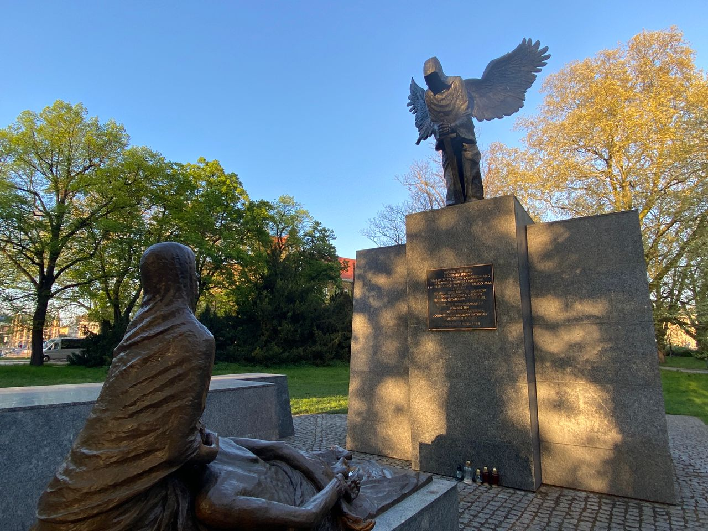

Real Story · 中文
顺利进入 Poland。
10 April 2024，我顺利进入 Poland。 那晚 overnight at Jelenia Góra Poland Garden Parking。
进入 Poland 后，路边出现大片黄色花田。 Toyotaki 停在花田旁边的时候， 那一刻很安静，也很漂亮。



Wrocław
Toyotaki in Wrocław.
后来来到 Wrocław, Poland。 11 April，我 overnight at Church of Sts. Maurice backyard free parking lot。
12 April and 13 April，我 overnight at Malatanskie Lake nearby free parking。 这些 parking spots 是 overland road 的实际骨架： 城市、湖边、教堂后院，都是旅程真正停下来的地方。

Civilisation and Memory
一个 museum 曾在 1945 年烧毁，后来靠 drawings and arts 被重建。
在 Poland，我看到一个 museum 的故事： 它曾经在 1945 年被烧毁， 后来靠着 drawings 和 arts， 一年一年被重建回来。
这让我很有感觉。 这就是 arts 对 civilisation 的重要性。 当建筑被毁、城市被烧、历史被打断， drawings、paintings、records 和记忆， 可能就是后来文明可以重新拼回来的线索。
A Country That Hurts
Poland 是一个令人心如刀割的国家。
Poland 是一个令人心如刀割的国家。 这个国家曾经在历史地图中消失了 123 年。 如今走在这里，处处都还是 war memory 的提醒。
这里也让我看到 Katyn memory： 这是关于一个命令、关于被杀害的 22,000 条 Polish lives 的记忆。 站在这样的地方，不能用 tourist mood 看。 只能安静下来。

English Memory Summary
Poland opened with beauty and pain together.
Tuzi entered Poland smoothly on 10 April 2024 and overnighted at Jelenia Góra Garden Parking. The road showed her wide yellow fields where Toyotaki could pause under the blue sky.
In Wrocław, the story became heavier. She saw reminders of destruction and rebuilding, including a museum that had been burned in 1945 and later reconstructed with the help of drawings and art. She also encountered Katyn memory, a reminder of the massacre of thousands of Polish lives.
On 11 April, Tuzi overnighted at the Church of Sts. Maurice backyard free parking lot. On 12 and 13 April, she stayed near Malatanskie Lake before the road continued toward Germany.
Heart Statement
有些国家用花田迎接你，也用历史让你沉默。
Poland opened with yellow fields and Toyotaki under a blue sky, but it also opened a deeper chamber: a country where war memory still stands in public places, asking travellers not only to look, but to remember.